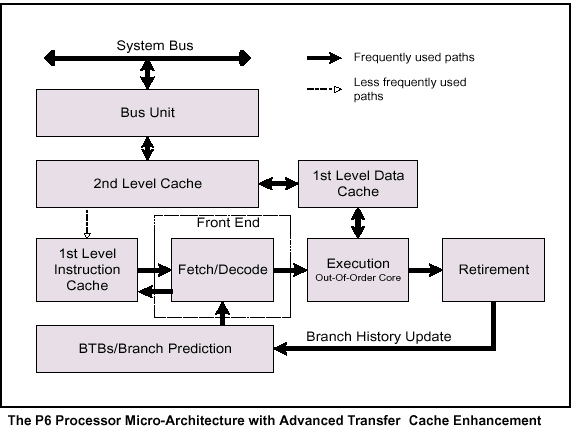

英特尔(R) 奔腾(R) Pro 处理器为英特尔 IA-32 处理器引入一种新的微体系结构，一般称作 P6 系列微体系结构。P6 系列微体系结构后来又增加了片内集成的二级缓存，即“高级传输缓存”。这个微体系结构是一种三向超标量管道化体系结构。术语“三向超标量”表示，通过使用并行处理技术，处理器平均每个时钟周期可以完成三条指令的解码、调度及执行（失效）。为处理这一级别的指令吞吐量，P6 系列使用支持无序指令执行的分离式 12 阶段超级管道。
P6 系列微体系结构管道的概念图

微体系结构管道分为四个部分（一级与二级缓存、前端、无序执行核心以及失效部分）。指令与数据通过总线接口单元提供给这些单元。
为确保指令与数据稳定供应给指令执行管道，P6 系列微体系结构采用两个级别的缓存。一级缓存提供 8K 字节指令缓存与 8K 字节数据缓存，两者都与管道紧密耦合。二级缓存是 256K 字节、512K 字节或 1MB 字节静态 RAM，它通过全时钟速度的 64 位缓存总线与核心处理器耦合。
P6 系列微体系结构的中心是一个极富创新精神的无序执行机制，叫做“动态执行”。动态执行采用三种数据处理概念：
深度分支预测。
动态数据流分析。
推测性执行。
分支预测是管道化微体系结构用于实现较高性能的现代技术。它可供处理器超越分支层面进行指令解码，保持指令管道满负荷运行。P6 系列采用经过高度优化的分支预测算法，以预测多层分支、过程调用及返回的指令流方向。
动态数据流分析涉及处理器中数据流的实时分析，以确定数据与寄存器相关性，及检测进行无序指令执行的机会。无序执行核心可以同时监视许多指令，按照可优化处理器多执行单元的顺序执行这些指令，同时保持数据完整性。这种无序执行保证即使在未命中缓存或是指令之间存在数据相关性时，执行单元也能保持高负荷运行。
推测性执行是指这样的处理器能力：执行躲在未曾解析的条件分支背后的一些指令，并最终按照原始的指令流顺序提交结果。为实现推测性执行，P6 系列微体系结构将指令的调度与执行同结果的提交分离开来。处理器的无序执行核心使用数据流分析执行指令池中所有可用的指令，并将结果存储到临时寄存器。
失效单元随后在指令池中线性搜索完成的指令，这些指令同其它指令或未解析的分支预测不再有数据相关性。
找到完成的指令时，失效单元按照它们原先的发出顺序将这些指令的结果提交给内存与/或 IA-32 寄存器（处理器的八个通用寄存器与八个 x87 FPU 数据寄存器），并使这些指令从指令池中失效。
通过综合使用分支预测、动态数据流分析及推测性执行，P6 系列微体系结构的动态执行功能消除了指令执行的传统预取与执行阶段线性指令顺序的限制。因此，即便存在多级分支，处理器仍可以继续执行指令解码。分支预测与高级解码器单元协同工作，保持指令管道高负荷运行。随后，无序推测性执行引擎便能利用处理器的六个执行单元并行执行各个指令。最后，它将按照原先的程序顺序提交执行指令的结果，以保持数据完整性与程序一致性。